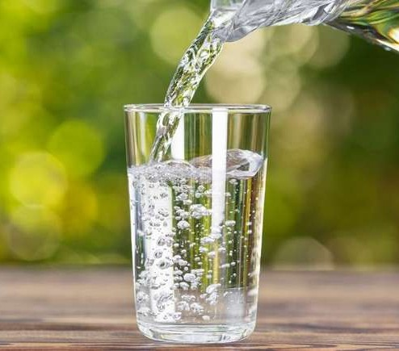
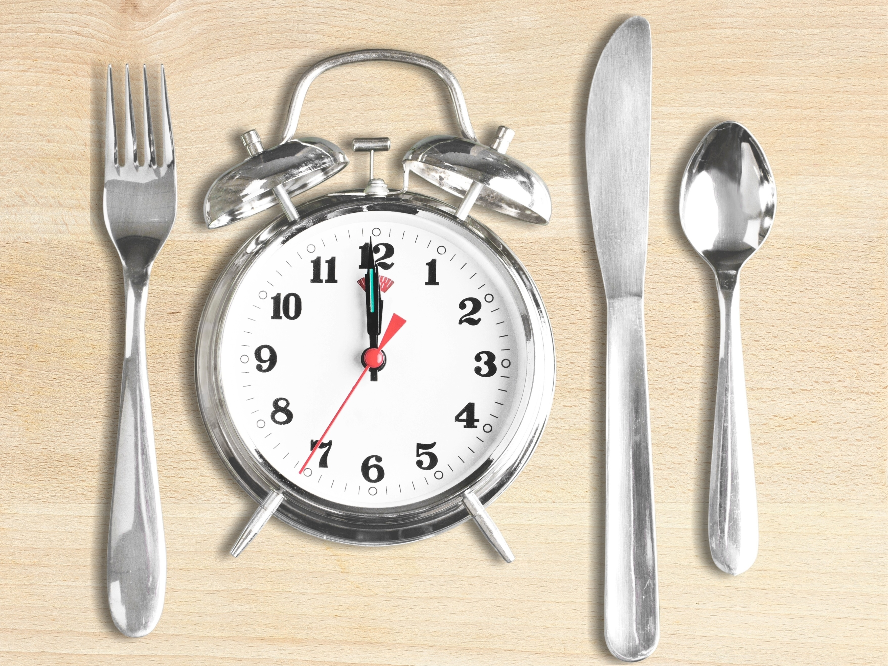
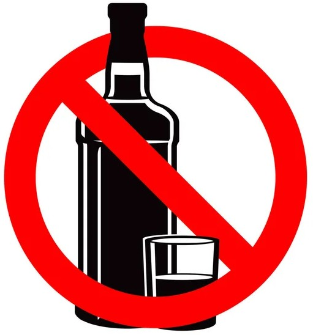
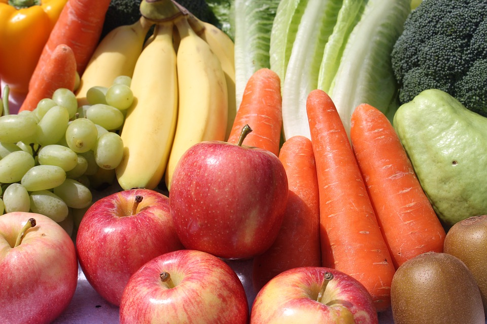

Confira aqui dicas de bons hábitos alimentares para seguir e assim ter uma vida mais saudável

Hábitos alimentares fazem parte das escolhas cotidianas. Substituir carne, arroz, feijão e salada por uma refeição de fast food na hora do almoço pode se tornar um costume para algumas pessoas. Como esse exemplo, nem sempre esses hábitos são saudáveis e podem levar a problemas de saúde a longo prazo. Por isso, é essencial entender o que são hábitos alimentares e como eles afetam nossa saúde.
O que é comer bem?
Uma alimentação saudável ajuda o corpo a funcionar melhor e interfere diretamente no seu bem-estar físico e mental. Comer bem é evitar o consumo de sódio, açúcar, frituras e gorduras saturadas e industrializadas, que são um gatilho para doenças como infarto, derrames, hipertensão, obesidade, diabetes e até câncer. O importante é dar mais espaço no prato para alimentos naturais e frescos: frutas, verduras, legumes, feijões e grãos integrais no seu cardápio, além de dar preferência aos grelhados e assados. Comer bem é cuidar da saúde.
Como ter um bom hábito alimentar?
Ter um bom hábito alimentar é saber se alimentar adequadamente, saber de onde vem seu alimento, consumir alimentos nutritivos, na
quantidade certa, trazendo para o organismo todos os nutrientes que ele precisa para manter a energia, prevenir doenças, garantir o bom
funcionamento e bem-estar do corpo, potencializar a memória, além de combater efeitos negativos de sonolência e mau humor.
Dados da Organização Mundial da Saúde (OMS) mostraram que níveis de nutrição adequados podem aumentar a produtividade em até 20%.
A OMS ainda declara que a escolha por alimentos nutritivos e saudáveis pode ajudar na capacidade do corpo de combater infecções, bem
como reduzir a probabilidade de a pessoa desenvolver problemas de saúde, incluindo obesidade, doenças cardíacas, diabetes e diferentes
tipos de câncer.
É importante observar o que você está consumindo, como e onde está se alimentando e saber da onde vem seu alimento. Criar um bom hábito
alimentar vai além de comer bem, é sobre ter consciência de todo processo do alimento, desde sua origem até a sua mesa.
Hábitos alimentares saudáveis
1- Beba bastante líquido durante o dia
Beber água é um hábito alimentar importantíssimo! O líquido hidrata o corpo de dentro para fora, controla a temperatura corporal, otimiza o trânsito intestinal e, ainda por cima, ajuda a dar um up na beleza da pele, das unhas e dos cabelos. O ideal é tomar de 6 a 8 copos de água todos os dias, o que equivale a cerca de 2 litros. Se não é tão fã da água pura, você pode complementar a ingestão de líquidos com água de coco, chás e sucos naturais sem açúcar, ok?
2- Invista em alimentos orgânicos e integrais
A lógica é simples: quanto mais natural for sua alimentação, melhor! Por isso, é interessante consumir alimentos orgânicos, sem aditivos químicos. Os integrais também são bem-vindos, uma vez que apresentam maior quantidade de fibras, aumentando a sensação de saciedade, colaborando para o controle do peso e regulando a taxa de glicose no sangue.
3- Evite ficar muito tempo sem comer
Nem mesmo a rotina agitada e a agenda cheia devem ser motivos para você pular as refeições, combinado? Encontre tempo para se alimentar adequadamente no café da manhã, no almoço e no jantar. Entre as refeições principais, faça pequenos lanches, com frutas e snacks saudáveis, mantendo uma distância de 3 horas entre uma refeição e outra. O que você deve entender desde já é que pular refeições é uma prática muito prejudicial, pois desacelera o metabolismo e descontrola o apetite. Pode reparar: quando ficamos muito tempo sem comer, tendemos a exagerar na refeição seguinte. Melhor manter o equilíbrio sempre, não concorda?
4- Consumo exagerado de sal
Considerando que o excesso de sal é extremamente prejudicial para a saúde, trate de evitar o consumo excessivo de alimentos muito salgados! Comer muito sal aumenta o risco de hipertensão arterial e de doenças cardiovasculares, além de provocar retenção de líquidos e inchaço corporal. É preciso moderar até mesmo no tempero da salada, viu?
5- Fuja das bebidas alcoólicas
Se você pretende se alimentar melhor, a ingestão de álcool também deve ser evitada. Além de não fornecem nutrientes importantes para o organismo, as bebidas alcoólicas são muito calóricas, favorecendo assim o ganho de peso. Como se não bastasse, o álcool pode prejudicar o funcionamento do fígado, bem como desencadear a hipoglicemia se consumido em excesso.
6- Coma mais frutas, legumes e verduras
Você já ouviu falar que prato saudável é prato colorido? Pois essa afirmação faz todo sentido se considerarmos a variedade de cores das frutas, das verduras e dos legumes. Assim, para completar nossa listinha de hábitos saudáveis, aumente as cores presentes nas refeições ao acrescentar mais desses ingredientes no seu cardápio! Extremamente nutritivos, esses alimentos são ricos em vitaminas e sais minerais essenciais para a saúde. Só para você ter uma ideia dos benefícios, as frutas, os legumes e as verduras atuam como coadjuvantes no controle do peso e colaboram no controle da taxa de açúcar no sangue. Além disso, são ricas fontes de fibras e antioxidantes.
